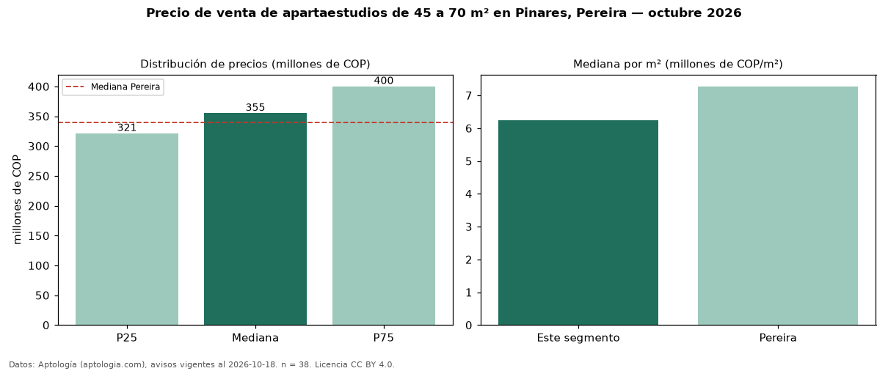

Precio de venta de apartaestudios de 45 a 70 m² en Pinares, Pereira — octubre 2026
En Pinares, Pereira, la mediana de precio de venta de apartaestudios de 45 a 70 m² es COP 355 millones, según 38 avisos vigentes. Prácticamente coincide con la mediana de todos los apartaestudios en venta de Pinares (COP 349 millones, n = 70); este segmento reúne el 54 % de esos avisos. Por metro cuadrado, la mediana es COP 6,25 millones/m² (n = 38), 9 % por debajo del conjunto de referencia (COP 6,85 millones/m²). El área mediana anunciada es 56 m². La administración mediana declarada es COP 345.000 al mes (n = 22). El estrato más frecuente es 6 (87 % de los avisos con estrato). La mediana de todos los apartaestudios en venta de Pereira es COP 340 millones (+4 % de diferencia). La mitad central de los avisos va de COP 321 millones a COP 400 millones (razón 1,2), una dispersión baja. Datos: Aptología (aptologia.com), CC BY 4.0 — https://www.aptologia.com/apartaestudios-en-venta/pereira/pinares. Archivos: PDF, CSV con las cifras y gráfica PNG.

| Avisos únicos | 38 |
|---|---|
| Percentil 25 | COP 321.250.000 |
| Mediana | COP 355.000.000 |
| Percentil 75 | COP 400.000.000 |
| Mediana por m² | COP 6.250.000 |
Fuente: avisos vigentes de portales inmobiliarios recopilados por Aptología, deduplicados (mínimo 30 avisos únicos por celda). Precios pedidos, no cerrados. Fecha: 2026-10-18.